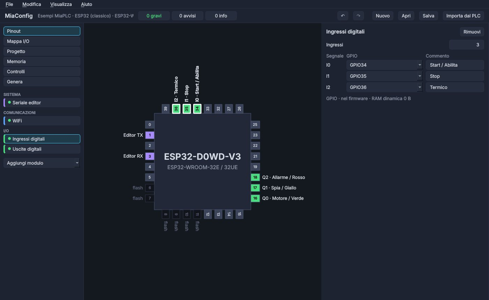
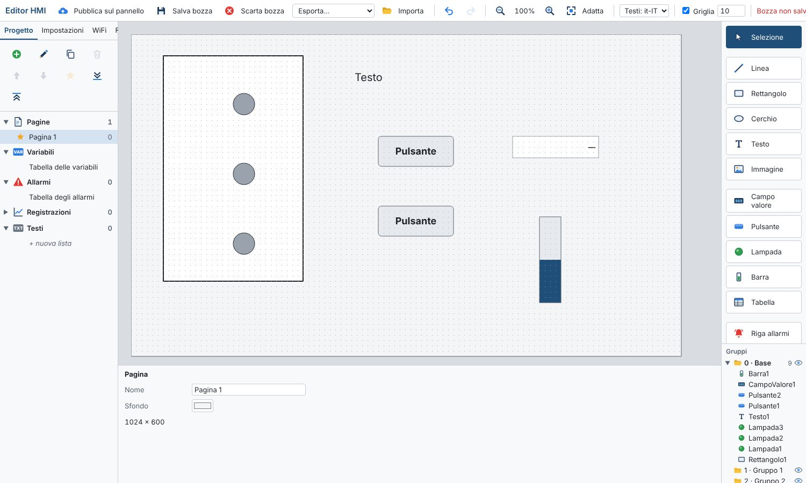

MiaPLC wiki
The editor's interface is available in Italian and English: pick the language from the drop-down in the toolbar.
What is MiaPLC
MiaPLC (Micro Integrated Automation Programmable Logic Controller) is a PLC built on ESP32 microcontrollers. Three pieces work together:
- the board: an ESP32 with inputs, outputs and usually Ethernet;
- the firmware: runs the program in a bytecode virtual machine, scan after scan, and handles network, I/O, clock and diagnostics;
- the web editor: lives inside the PLC. Open it in the browser with the board's IP address and program in ladder.
The workflow is the one of industrial PLCs: write the program, Compile, Download to cpu, Run, then Online to watch it work.
First steps
- Choose a board. A reference board is a good start (see Boards).
- Build the firmware with MiaConfig. Draw the board (inputs, outputs, Ethernet, clock), then Generate → Build firmware. The first time it downloads the build tools (internet and about 1 GB of disk needed); after that it just builds.
- Flash the firmware. For the first install use
<board>-completo.binwith the Espressif tools (a single file at address 0x0). Later updates are done from the editor with the.miaplc.fwpackage. - Open the editor. Connect the PLC to the network and open its IP address in the browser.
- Write your first network, then Compile → Download to cpu → Run → Online.
No board yet? Start with the simulator: it's the same editor, with a simulated PLC in your browser.
The simulator
The simulator is the real editor with a simulated PLC instead of the board. Its virtual machine is the same logic as the firmware, rewritten in JavaScript with the same limits, so a program that works in the simulator works on the board too.
- In the MOCK PLC panel click inputs
I0…I5to switch them on and off; outputsQ0…Q3light up when active. - RUN / STOP / Reboot act like the board's switch and reset; Errore and Offline simulate a fault and a lost connection.
- The execution time shown is an estimate: the real one is measured on the PLC.
- Program and state stay saved in your browser; Reset mock clears everything.
The scan cycle
Like every PLC, MiaPLC repeats the same loop forever:
- read the inputs;
- run the program from start to end (Main and the FCs it calls);
- write the outputs.
So the program never “waits”: every network is evaluated again on every scan. Timers measure time between scans, edges remember the previous scan's state. Scan time and CPU load are shown in Diagnostics and in the system DB.
Blocks: Main, StartUp, FC, DB
| Block | Purpose |
|---|---|
| Main | The main program, run on every scan. |
| StartUp | Run once at power-up or after a Download: initial values, resets. |
| FC (function) | A reusable piece of program with its own interface (inputs, outputs, local variables). Called from Main or from other FCs. |
| DB (data block) | Named, typed variables, including structures and arrays. A DB can be retentive: it keeps its values at power-off. |
| System DBs | Created by the PLC: board data and system values (scan time, free RAM, network status, first scan…), read-only. |
Every block is split into networks, each with a title and comment. Blocks can be grouped in folders.
Areas and addresses
| Area | Addresses | Contents |
|---|---|---|
I | I0 … I1023 | Digital inputs (read-only) |
Q | Q0 … Q1023 | Digital outputs |
M | M0 … M1023 | Markers: internal memory bits |
T | T0 … T255 | Timers: contact T5 is the output of timer 5 |
SM | SM0 … SM5 | System bits (read-only, see below) |
MB / MW / MD | e.g. MW3, MW3.5 | Memory bytes, words and double words; MW3.5 is bit 5 of word 3 |
DB | e.g. "Plant".level | Data block variables, by name |
System bits
| Bit | Meaning |
|---|---|
| SM0 | 1 on the first scan only |
| SM1 | always 1 |
| SM2 | always 0 |
| SM3 | 10 Hz clock |
| SM4 | 2 Hz clock |
| SM5 | 1 Hz clock |
Every address can get a symbol (name and comment) in the symbol table: in the ladder you'll see "Start" above I0.
Data types
| Type | Range |
|---|---|
| BOOL | 0 / 1 |
| BYTE · USINT | 0 … 255 |
| SINT | −128 … 127 |
| WORD · UINT | 0 … 65535 |
| INT | −32768 … 32767 |
| DINT | 32-bit signed |
| UDINT | 32-bit unsigned |
| REAL | 32-bit floating point |
| TIME | time in ms, written T#5s, T#1m30s, T#250ms |
| TIMER | a timer whose state lives in a DB variable (doesn't use T0…T255) |
DBs and FC interfaces can also use arrays and structures (e.g. "Data".motor.speed).
Ladder instructions
| Group | Instructions |
|---|---|
| Contacts | NO, NC, positive / negative edge of an operand, power-flow edge P_TRIG / N_TRIG, NOT, comparison (== <> < > <= >=) |
| Coils | coil, negated coil, SET, RESET, end of FC (RET) |
| Timers | TON on-delay, TOF off-delay, TP pulse |
| Counters | CTU up, CTD down, CTUD up/down |
| Numbers | MOVE, ADD, SUB, MUL, DIV, MOD, NEG, ABS, MIN, MAX, LIMIT, CONV, SQRT, SQR, SCALE (e.g. 0…27648 → 0…100 %) |
| Words | AND, OR, XOR, INV, SHL, SHR, ROL, ROR, SWAP |
| Functions | FC call, with its parameters |
Numeric boxes have EN / ENO: an overflow or a division by zero doesn't stop the PLC, it sets ENO to 0.
How they look in the ladder


The pictures come from the editor. Memory words MW show up as fields of the «Merker» DB (e.g. "Merker".MW4). Step by step: build the example projects.
FCs in ST and C
A function can also be written as text: ST (Structured Text) or C. You get IF, CASE / switch, FOR, WHILE, REPEAT / do-while, EXIT / break, CONTINUE, RETURN, with auto-completion of variable names, DB fields and symbols. Handy for calculations and recipes, while contact logic stays in ladder.
IF #start AND NOT #stop THEN
#output := TRUE;
ELSIF #stop THEN
#output := FALSE;
END_IF;
Online and diagnostics
- Online: closed contacts and energised coils turn green, timers show elapsed / preset time, boxes show their values.
- Diagnostics: PLC status, versions, event log, scan times, CPU load, RAM analysis, boot checks.
- An error in one module doesn't stop the board: it becomes a warning in diagnostics and the PLC carries on.

Boards and MiaConfig
MiaConfig is the configurator: describe the board (inputs, outputs, Ethernet, WiFi, clock, I2C/SPI devices) and it picks the firmware modules and builds it. It runs on Windows, Linux and macOS and installs nothing on the system: everything stays in its folder.
| Chip | Example configurations |
|---|---|
| ESP32 | Olimex ESP32-EVB (with or without DS3231 clock) |
| ESP32-C3 | with W5100 or W5500 Ethernet, with or without DS3231 |
| ESP32-S3 | ESP32-S3-DevKitC-1 |
| ESP32-P4 | PLC and HMI panel |
Ethernet chips supported by the firmware: W5100, W5500, LAN8720, IP101.

Manual: set up the examples' hardware with MiaConfig, from the project to the wiring.
µLink: remote I/O
µLink connects input/output modules to the PLC over wired Ethernet. It works directly on Ethernet frames, without IP addresses: the PLC searches for modules (“Search devices”), pairs them and drives them as if they were its own I/O.
- A module can be another ESP32 running MiaPLC firmware in the I/O module role.
- Or an Arduino Uno with a W5100 or W5500 Ethernet shield, using the MiauLink library.
- Modules can also have analog inputs and outputs.
HMI panel
MiaHmi is the firmware for a 10.1" touch panel on ESP32-P4: it reads and writes PLC data and shows fast trend charts. It is prepared with MiaConfig (HMI project), just like the PLC.

FAQ
Is it a certified PLC?
No. MiaPLC is meant for teaching, prototypes and hobby projects. Do not use it for safety functions (emergency stops, guards, protection of people): those require certified safety components.
Does it need internet?
No. The PLC and its editor work on the local network. MiaConfig needs internet only the first time, to download the build tools.
How much does it cost?
The software is free. The hardware is an ESP32 board: from a few euros for a C3 module up to boards with Ethernet and relays already fitted.
What licence is it under?
Firmware, editor and tools are free software under the GPL-3.0 licence; the µLink library (MiauLink) is under the LGPL-3.0, so it can also be used in firmware with another licence. Current status: private repositories, release in progress.
Does what I learn here apply to industrial PLCs?
Yes, in the concepts: scan cycle, ladder, networks, functions with interfaces, data blocks, IEC data types, Online view. Every brand has its own environment and details, but once you've got these basics you find your way quickly.